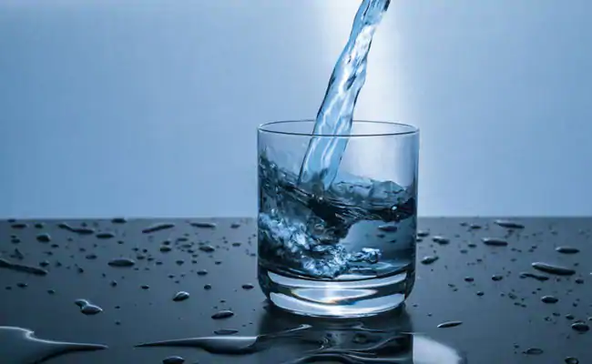
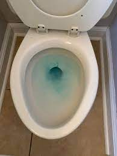
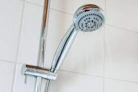
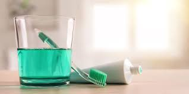
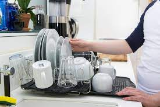
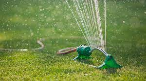
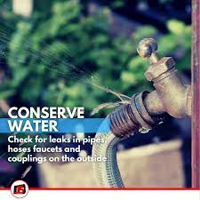
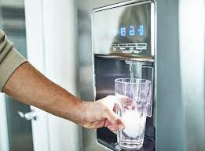

Water symbolize Love, As long as you keep your hand
Carringly open and allow it to remain there, it will always be there
If you attempts to close your fingers around it and try to posses it.
it will spill throgh the first cracks it finds,
This is the greatest mistakes that people do when they meet love
they try to posses it, they demand, they expect,
just like water spilling out of our hand,
love will retrieve from you.
For love is meant to be free, you can not change its nature.
If there are people you loves, allow them to be free beings,
Give and dont expect. Advise, But dont order ,
Ask, but never demand , It is the secret to true love".
DON'T WASTE YOUR WATER

Put a few drops of food coloring in your toilet tank. If, without flushing, the coloring begins to appear in the bowl., you have a leak that may be wasting more than 100 gallons of water a day.

A typical shower uses five to ten gallons of water a minute. Limit your showers to the time it takes to soap up, wash down and rise off.

Before brushing, wet your brush and fill a glass for rinsing your mouth.

If you have two sinks, fill one with rinse water. If you have only one sink, first gather all your washed dishes in a dish rack, then rinse them quickly with a spray device or a pan of water.

When you do water your lawn, water it long enough for water to seep down to the roots where it is needed. A light sprinkling that sits on the surface will simply evaporate and be wasted.
Children love to play under a hose or sprinkler on a hot day. Unfortunately, this practice is extremely wasteful of precious water and should be discouraged.

outside the house are easier to ignore since they since they don't mess up the floor or keep you awake at night. However, they can be even more wasteful than inside water leaks especially when they occur on your main water line.

Keep drinking water in the refrigerator instead of letting the faucet run until the water is cool.